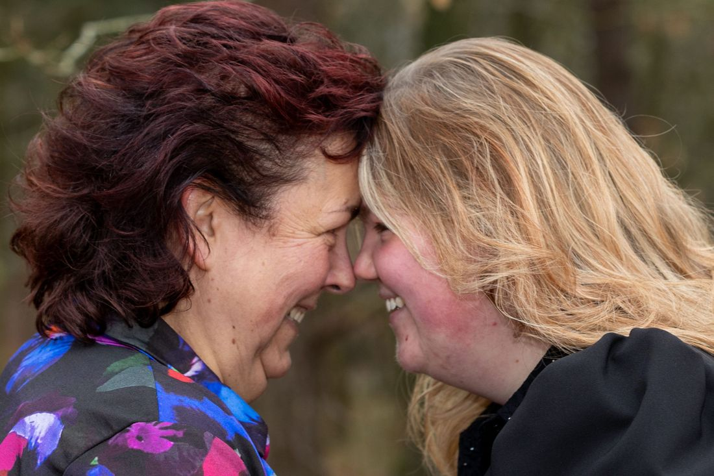
Familiefotografie
Gezin, familie, loveshoot of portret. Ontspannen en zonder geposeer, op een buitenlocatie naar keuze.
Vanaf € 250Meer info
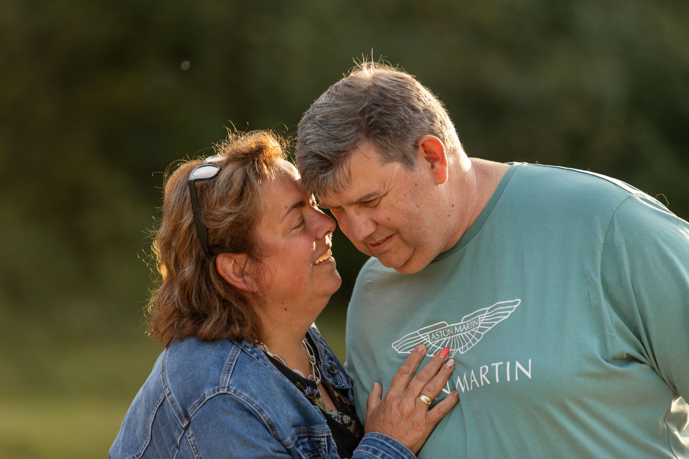
Familie-, afscheids- en eventfotografie vanuit Hoogerheide. Geen gemaakte glimlach, maar een stevige knuffel, een klaterende lach of een laatste afscheid. Herinneringen waar je later met een lach en een traan op terugkijkt.
Gonnie weet de sfeer en emotie goed te vangen op foto. De liefde voor haar vak, zie je terug in haar foto's.Marit Stroop · Google
Voor de momenten die je niet wilt vergeten. Klik op een soort fotografie voor de pakketten en prijzen.

Gezin, familie, loveshoot of portret. Ontspannen en zonder geposeer, op een buitenlocatie naar keuze.
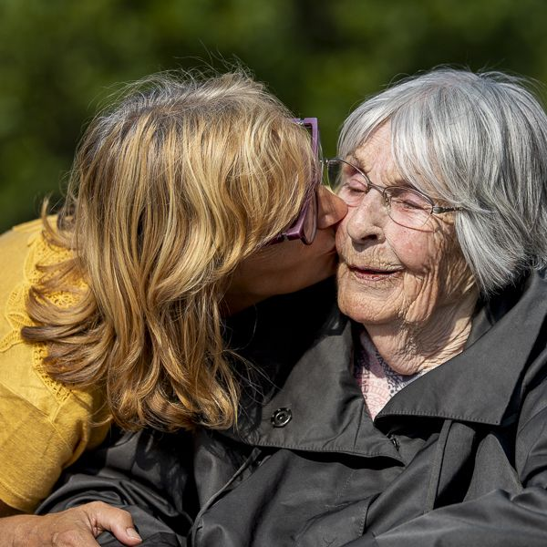
Een laatste dag samen of een uitvaart. Respectvol en discreet vastgelegd, op afstand en toch dichtbij.
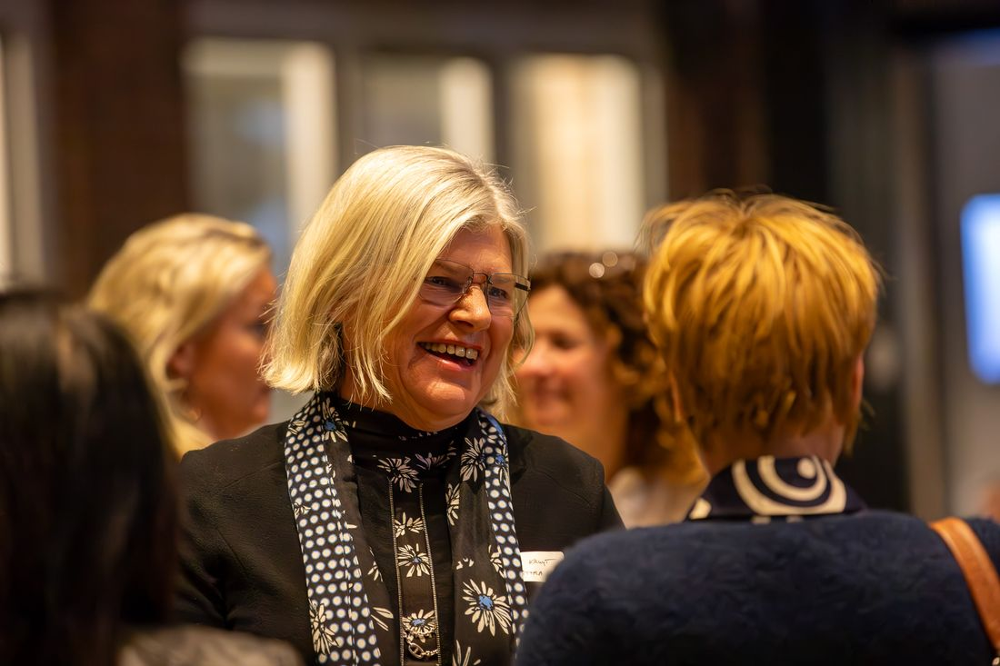
Zakelijke bijeenkomsten, sport en opleidingen. Levendige beelden in plaats van geposeerde registraties.
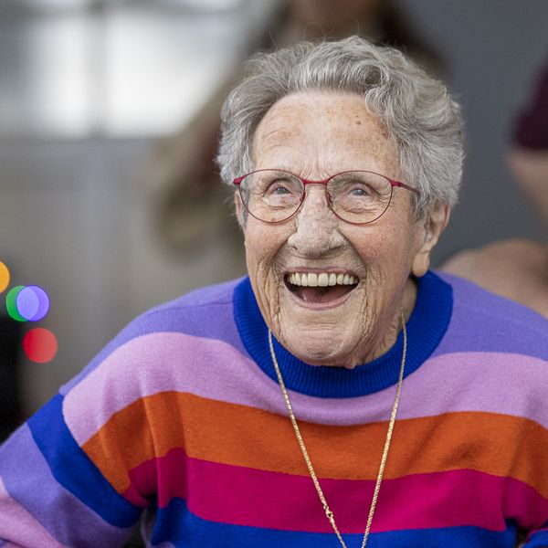
Via Project Zenna krijgt iedere senior vanaf 70 jaar een gratis fotoshoot. Je kiest zelf één foto, die je gratis en zonder watermerk krijgt.
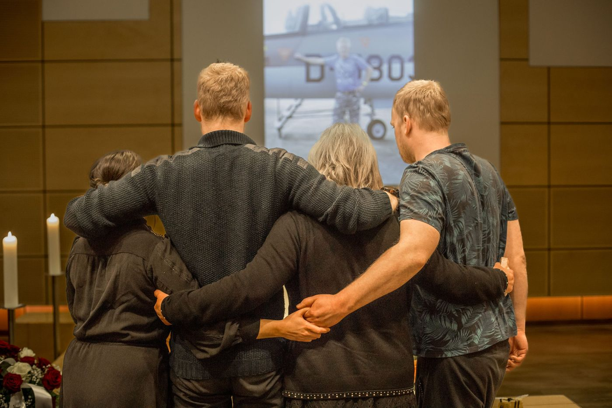
"Ik fotografeer wat er nog wél is: liefde, warmte en verbinding."
De dagen rond een afscheid gaan vaak in een roes voorbij. Ik houd afstand, maar ben tóch dichtbij. Zo leg ik de kleine gebaren vast die je zelf niet bewust meemaakt: een handkus op de kist, een arm om je heen of een zacht kneepje in je hand.
Ook voor een laatste dag samen, in de natuur, aan het strand of op een plek waar jullie graag komen.
"Haar aanwezigheid was bijna onmerkbaar, wat ons in staat stelde ons volledig te concentreren op het afscheid nemen."Hans de Groot
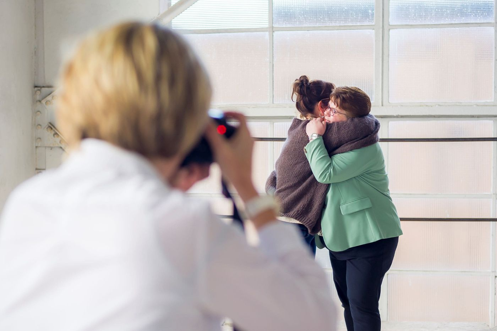
Een techniek die niets met mijn camera te maken heeft, maar alles met de mensen die ik fotografeer.
Ik vraag naar jullie wensen en wie jullie zijn. Zo kan ik me goed voorbereiden.
Tijdens de shoot ontstaan echte gesprekken, een slappe lach of een traan. Die momenten vang ik.
Je krijgt alle beelden digitaal, en bij de meeste pakketten een fotoboekje of album.
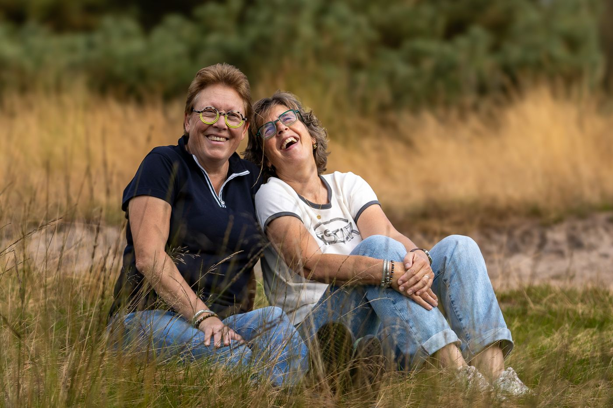
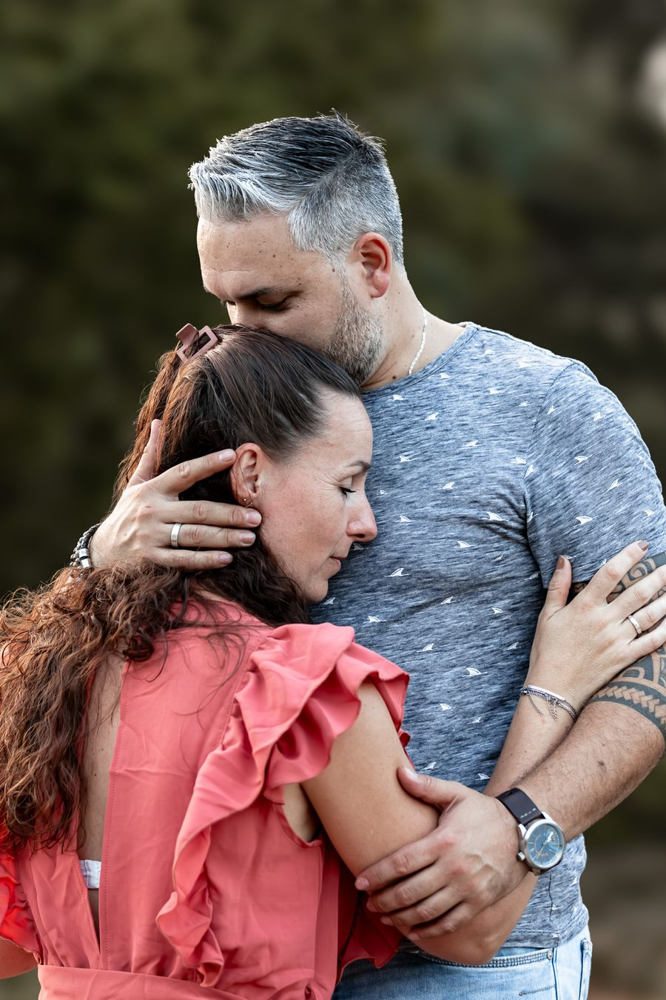
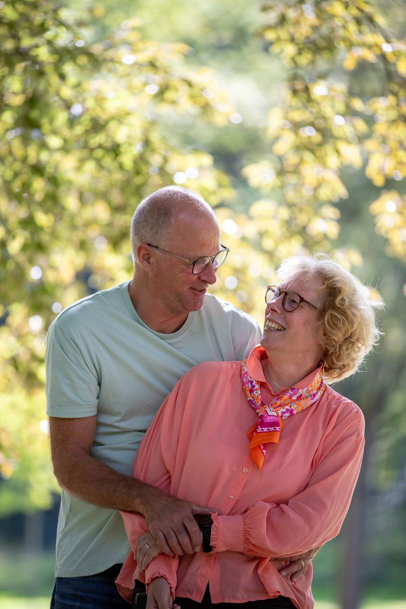
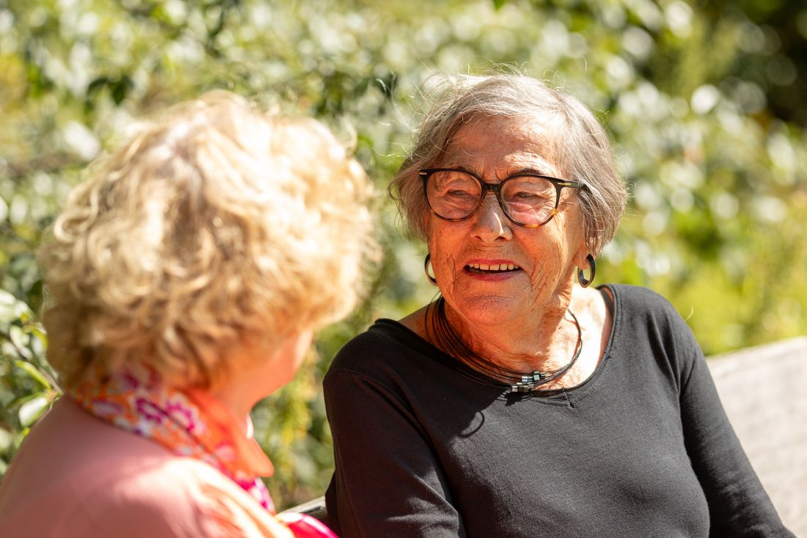
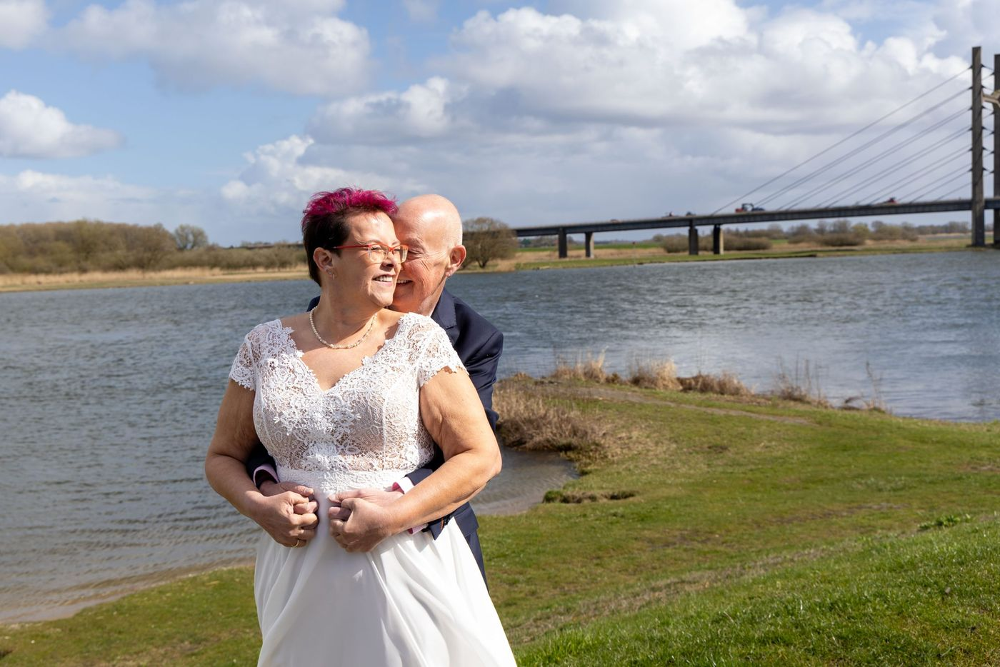
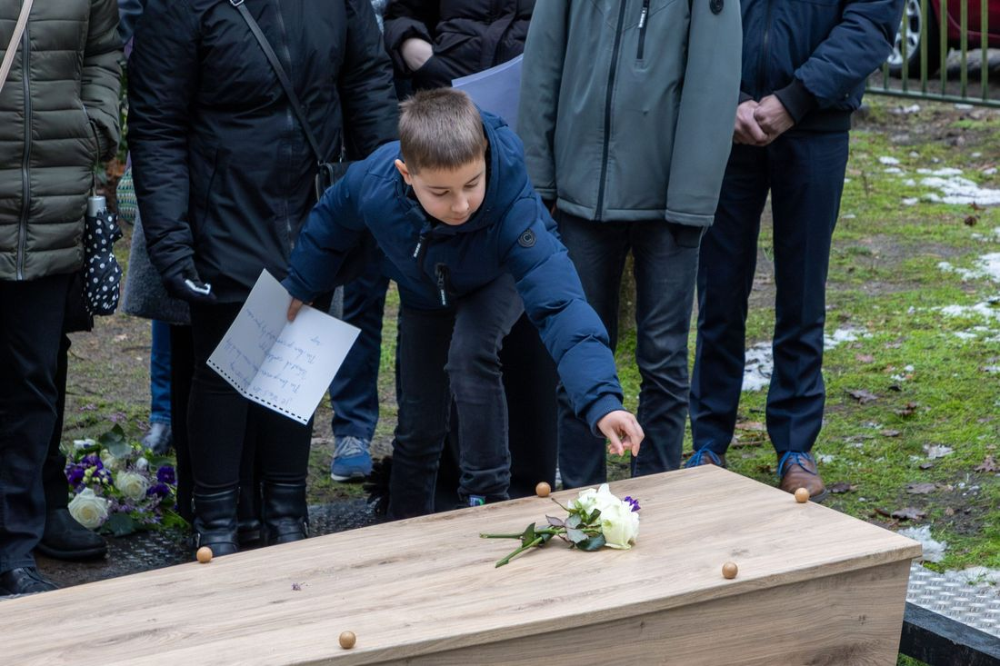
★★★★★"Toen mijn man was overleden kwam ik in contact met Gonnie om een reportage te laten maken door haar, eerst dacht nee, maar toch gedaan. Achteraf zo blij dat ik het gedaan heb, zo heb ik foto's van de uitvaart want die maak je echt niet bewust mee. (…) Ze wist precies wat ze op de achtergrond deed. Echt een aanrader"
★★★★★"Een prachtige shoot met mijn man laten maken door Gonnie. Het was relaxed en ontspannen. We hebben gelachen en een kleintje traantje gelaten, hierdoor heeft Gonnie de aller puurste foto's van ons kunnen maken."
★★★★★"Ik was een beetje sceptisch, want een fotoshoot is zo "gemaakt". (…) Zij laat de situatie zijn zoals die is en legt deze vast. Daardoor was het ongemakkelijke gevoel er niet en voelde het heel erg natuurlijk aan."
★★★★★"Nog nooit zo'n ontspannen en leuke fotoshoot gedaan! Gonnie zorgde ervoor dat echt iedereen (we waren met 12 personen) leuk op de foto staat. Dat gaan we zeker nog eens doen!"
★★★★★"Gonnie heeft inmiddels drie keer het International Women's Day evenement in Breda gefotografeerd, en haar werk is werkelijk indrukwekkend. Ze weet prachtige close-ups te maken die de emotie en sfeer van het evenement perfect vastleggen."
★★★★★"Een echte aanrader. Gonnie is een mensen-mens met een passie voor het vastleggen van jullie liefde voor elkaar op een heel natuurlijke manier. Geen neplach en klik."
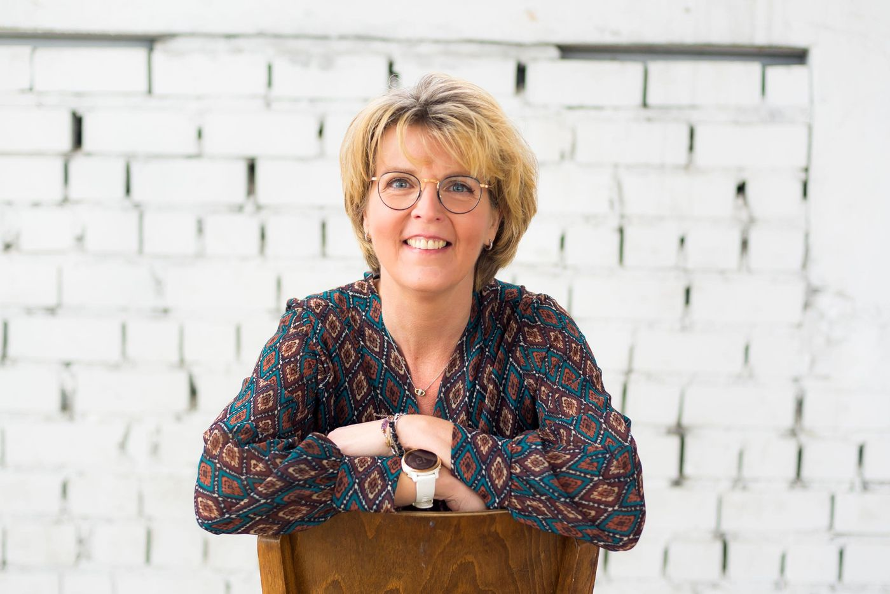
"Gefascineerd door gezichten en dól op hoofden."
Er zit een verhaal achter een gezicht, achter een emotie of achter die ene knipoog. Dat vind ik juist zo mooi. Samen met mijn vrouw Kirsten en onze kinderen woon ik in Hoogerheide.
In 2018 overleed mijn zus onverwachts. Ruim 800 mensen kwamen afscheid nemen, maar haar zoon van toen 15 heeft geen foto's van die dag. Sindsdien weet ik nog beter hoe waardevol tastbare herinneringen zijn. En dat gun ik iedereen.
Vertel me wat je wilt laten vastleggen. Eerst een kopje koffie drinken en kennismaken kan altijd.
Zeker bij een afscheid gaat het vaak snel. Bel of app me gerust, dan kijken we samen wat er mogelijk is.